概述：知识点
- Linux 临界资源概述
- Linux 进程同步与互斥
- Linux 进程间通信概述
- Linux 进程间通信之管道方式
[toc]
0x01 临界资源
两个以上的进程不能同时使用的资源称为临界资源。临界资源可能是一些独占设备，例如：打印机、播放器、摄像头等等硬件设备；也可能是一块共享内存、表格文件、链表等软件资源。
举例说明：假设有一个火车订票系统有两个终端程序在运行 T1 和 T2 ，如果不对临界资源进行特殊管理，则很可能出现 T1 和 T2 同时获取到同一张票的信息卖给了不同的乘客，然后车票余量还只减少了一张。出现这样的情况就是因为 T1 和 T2 在访问订票系统的临界资源时没用进行限制使用导致的。
0x02 临界区
不论是硬件资源还是软件资源，多个进程必须互斥访问而不能同时访问，一旦同时访问就会出现问题。每个进程中访问临界资源的那段代码称为临界区。所以，如果能够保证各个进程在进入各自临界区是互斥的，那么就可以实现各个进程对临界资源的访问是互斥的。因此，每个进程在进入临界区之前，应该先对欲访问的临界资源进行检查，检查当前临界资源是否有进程在进行访问，如果当前存在进程访问（即占用临界资源），则当前该进程不能进入临界区；如果此刻没有其他进程正在访问和使用临界资源，则当前进程可以进入临界区对临界资源进行访问和使用，并设置正在访问标识来告诉其他进程此时临界资源正在被使用。（这样的操作就类似火车上的男女共用的单独卫生间，当有人在使用时，红灯亮起告诉所有人正在使用，当无人使用时绿灯亮起，表示当前所有人都可以进入）
进程在进入临界区前需要检查临界资源使用情况，能够访问临界资源后需要设置正在访问标识。在经常访问资源完成后退出临界资源的访问后，需要将访问标识恢复原样，这部分的代码称为退出区。进程中除了进入区、退出区、临界区，其余部分的代码称为剩余区，于是一个访问临界资源的进程可以被封为如下部分组成：
进入区
临界区
退出区
剩余区0x03 进程的互斥与同步
- 进程互斥 进程互斥是指多个进程不能同时使用同一个临界资源，即两个或两个以上进程必须互斥地使用临界资源或者不能同时进入临界区。这是由于各个进程共享某些资源引起的。
- 进程同步 进程同步是指有协作关系的进程之间不断地调整它们之间的相对执行过程，以保证临界资源在不同进程中执行的顺序和合理利用。
0x04 Linux实现进程互斥和同步机制
Linux 操作系统下对于进程的互斥和同步控制主要有以下这三种方式：
- 锁机制
- 信号量机制
- xxxxxxxxxx16 1#include <sys/types.h>2#include <sys/IPC].h>3#include <sys/msg.h>45int msgctl(int msgqid, int cmd, struct msgid_ds *buf)6/7参数：8- msqid 消息队列的队列 ID9- cmd 执行操作，如下：10 - IPC]_STAT：读取消息队列的数据结构 msgid_ds ，并将其存储到 buf 位置11 - IPD_SET：设置消息队列的数据结构 msgid_ds 中的 IPC]_perm 值，这个值取自 buf 参数12 - IPC]_RMID：从系统内核中删除消息队列13- buf：描述消息队列的 msqid_ds 结构类型的变量14返回值15 成功返回 0， 失败返回 -116/C
0x05 锁机制
Linux 锁机制其实就是一种实现互斥的软件方式，即提供一对进程共享的锁变量，在进入临界区之前首先测试锁变量的状态，通过锁的状态了解到临界资源是否被占用。临界资源可用，则设置锁变量；临界资源被占用，则会根据锁的不同选择睡眠等待、自旋等待或者返回资源占用状态等。主要操作流程演示如下：
#加锁
Lock w:
{
访问临界资源
}
#访问完毕，开锁
UnLock w;0x06 信号量机制
在早先提出的一种广义锁机制或称为计数锁的同步机制，既能解决互斥又能解决同步，是一种非常有效的同步工具，后来加以改进形成了信号量同步机制。
申请和释放临界资源的方式通过 wait() 操作和 signal() 操作完成，有时候也称为 P 操作（荷兰语 Passeren 首字母）和 V 操作（Verhoong 的首字母）。
信号量也被叫做信号灯，是在信号量同步机制中用于实现进程的同步和互斥的有效数据结构。我们可以为每一类资源设置一个信号量，信号量有很多种类型的数据结构，如整型信号量、记录型信号量、AND 型信号量以及信号量集等。
整型信号量
整型信号量是信号量中最简单的类型，也是各种信号量类型中必须包含的类型。整型信号量的数值表示当前系统中可用的该类临界资源的数量。
如设置了整型信号量 s ，则 s 值的意义为：
s>0，表示系统中空闲的该类临界资源的个数；s=0，表示系统中该类临界资源干好全部被占用，而且没有进程在等待临界资源；s<0，s 的绝对值表示当前系统中等待该临界资源的进程个数；
wait(S) 和 Signal(S) 可以简单被描述成如下的代码执行方式：
//wait(S)
while(s <= 0)
{
//进程等待
}
s = s - 1;
//Signal(S)
//发送信号
s = s + 1;记录型信号量
记录型信号量的数据结构由两部分组成：
struct semaphone{
int s;//整型信号
list *l;//进程链表
};
struct semaphone S;在这个结构中，s 的值表示系统中可用的该类临界资源的数量，而 l 为进程链表指针，指向等待该资源的 PCB 队列。具体的操作如下图所示：

在记录型信号量机制中，s 的初值表示系统中该类资源的可用数目，因而又被成为资源信号量，每次对它进行 wait() 操作，即申请该类一个单位的临界资源，描述为 s=s-1 ，当 s>=0 条件满足时，表示在没用做减一操作前 s>=1 ，因此本进程可以继续执行；当 s>=0 条件不满足时，表示操作前系统就没有空闲的该资源，因此进程应该调用 block 将该进程的 PCB 插入由指针 l 指向的阻塞队列。因此，该机制遵循了“让权等待”。
s 的绝对值表示在该信号量链表中已阻塞等待进程的数目。对信号量的每次 signal() 操作表示执行进程释放一个单位的该类临界资源，因此操作 s=s+1 表示资源数目加一。如果加一操作后发现 s<=0 条件依然成立，这表示该信号链表中仍然有等待资源被阻塞的经常，所以还需要调用 wakeup 将第一个等待进程唤醒，其余进程继续等待；若 s<=0 不成立，则表示系统中没用等待该类资源的进程，因此本进程只需要释放它所占用的该类资源继续执行即可。
AND 型信号量
AND 同步机制的基本思想是将进程在整个运行过程中需要的所有资源，一次性全部分配给进程，待进程使用完成后再一起释放，只要有一个资源尚未分配给进程，其他所有可能分配的资源都不会分配给它。具体描述如下：
Swait(S1,S2,...,Sn)
if S1>=1 and S2 >=1 ... and Sn >=1 then
for i: =1 to n do
Si:=Si-1;
endfor
else
[将该进程放入阻塞队列]
endif
Ssignal(S1,S2,...,Sn)
for i:=1 to n do
Si = Si + 1;
唤醒所有 Si 不满足而进入阻塞队列的进程
endfor信号量集
如果某进程一次需要 N 个某类资源时，就需要进行 N 次 wait() 操作，这使得系统效率非常低并且可能造成死锁。
信号量集机制的基本思想是在 AND 型信号量集的基础上进行扩充，进程对信号量 Si 的测试值为 ti （用于信号量判断），占用值为 di （用于信号量的增减）
Swait(S1,S2,...,Sn)
Ssignal(S1,d1;S2,d2;...;Sn,dn)一般“信号量集”的几种特定情况如下：
Swait(S,d,d)表示每次申请 d 个资源，当少于 d 时不进行分配Swait(S,1,1)表示互斥信号量Swait(S,1,0)作为一个可控开关（当S>=1时允许多个进程进入临界区；当S==0时禁止任何进程进入临界区）- “信号量集”未必成对使用
Swait()和Ssignal()，如一起申请，但可以不一起释放
0x07 进程间通信
我们应该都知道了，进程是一个程序的一次执行，是系统资源分配的最小单元。这里所说的进程一般是指运行在用户态的进程，而由于处于用户态的不同进程间是彼此隔离的，但是它们很可能需要相互发送一些信息，好让对方知道自己的进度等情况，像这样进程间传递信息就叫进程间通信。
Linux 进程间通信的方式有以下几种（这是固定的）：
- 管道(Pipe)及有名管道(Named Pipe): 管道可用于具有”血缘”关系进程间(也就是父子进程或者兄弟进程)的通信。有名管道除具有管道所具有的功能外，还允许无”血缘”关系进程间的通信。
- 信号(Signal): 信号是在软件层次上对中断机制的一种模拟，它是比较复杂的通信方式，用于通知进程有某事件发生。
- 信号量(Semaphore): 主要作为进程之间及同一进程的不同线程之间的同步和互斥手段。
- 共享内存(Shared Memory): 可以说这是最有效的进程间通信方式。它使得多个进程可以访问同一块内存空间，不同进程可以及时看到对方进程中对共享内存中数据的更新。这种通信方式需要依靠某种同步机制，如互斥锁和信号量等。
- 消息队列(Messge Queue): 消息队列是消息的链表，包括
POSIx 消息队列和System V 消息队列。它克服了前两种通信方式中信息量有限的缺点，具有写权限的进程可以按照一定的规则向消息队列中添加消息;对消息队列具有读权限的进程则可以从消息队列中读取消息。 - 套接字Socket]): 这个绝对是一种更为一般的进程间通信机制，它可用于网络中不同机器之间的进程间通信，目前经常遇到的网络编程就会用到套接字通信。
0x08 管道
管道是 Linux 中进程间通信的一种方式，它把一个程序的输出直接连接到另一个程序的输入(其实我更愿意将管道比喻为农村浇地的管子)。Linux 的管道主要包括两种：无名管道和有名管道。这一节主要讲无名管道，首先介绍以下这两种管道。
- 无名管道
无名管道是 Linux 中管道通信的一种原始方法，如下图所示，它具有以下特点：
- 它只能用于具有亲缘关系的进程之间的通信（也就是父子进程或者兄弟进程之间）；
- 它是一个半双工的通信模式，具有固定的读端和写端；
- 管道也可以看成是一种特殊的文件，对于它的读写也可以使用普通的 read()、write() 等函数。但它不是普通的文件，并不属于其他任何文件系统并且只存在于内存中。
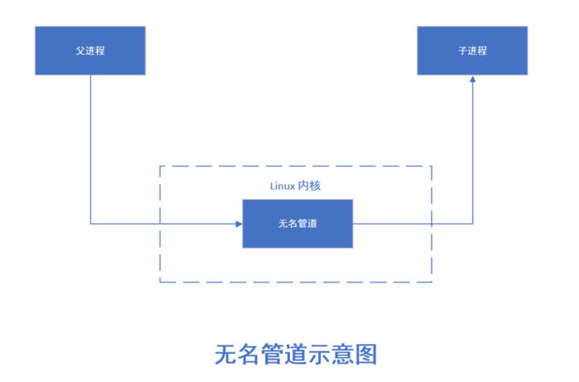
)- 有名管道(FIFO)
有名管道是对无名管道的一种改进，如下图所示，它具有以下特点：
- 它可以使互不相关的两个进程间实现彼此通信；
- 该管道可以通过路径名来指出，并且在文件系统中是可见的。在建立了管道之后，两个进程就可以把它当做普通文件一样进行读写操作，使用非常方便；
FIFO严格地遵循先进先出规则，对管道及FIFO的读总是从开始处返回数据，对它们的写则是把数据添加到末尾，它们不支持如lseek()等文件定位操作。
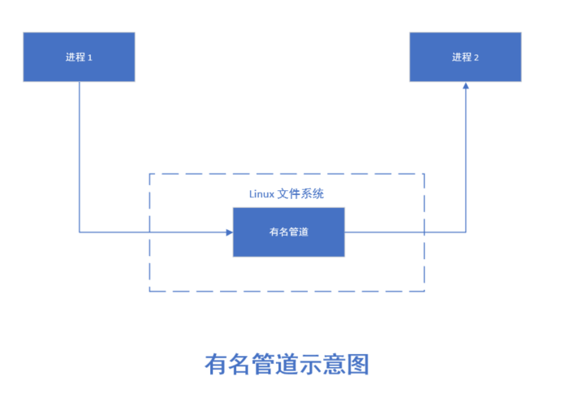
)无名管道及系统调用
- 管道创建与管道说明
管道是基于文件描述符的通信方式，当一个管道建立时，它会创建两个文件描述符 fd[0] 和 fd[1]，其中 fd[0] 固定用于读管道，而 fd[1] 固定用于写管道，如下图所示，这样就构成了一个半双工的通道。
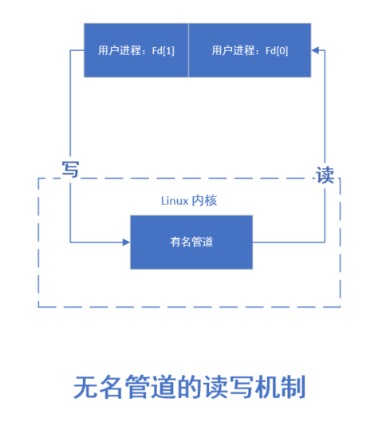
)管道关闭时只需要将这两个文件描述符关闭即可，可使用普通的 close() 函数逐个关闭各个文件描述符。
- 管道创建函数
创建管道可以用 pipe() 函数实现，具体如下：
#include <unistd.h> //所需头文件
int pipe(int fd[2]) //函数原型
/*
函数参数：fd[2] 管道的两个文件描述符，函数调用之后可以直接操作这两个文件描述符
返回值：0 - 成功，-1 - 出错
*/- 管道读写说明
用 pipe() 创建的管道两端处于同一个进程中，由于管道主要是用于在不同的进程间通信的，因此，在实际应用中没有太大意义。实际上，通常先是创建一个管道，再调用 fork() 函数创建一个子进程，该子进程会继承父进程所创建的管道，这时，父子进程管道的文件描述符对应关系如下图:
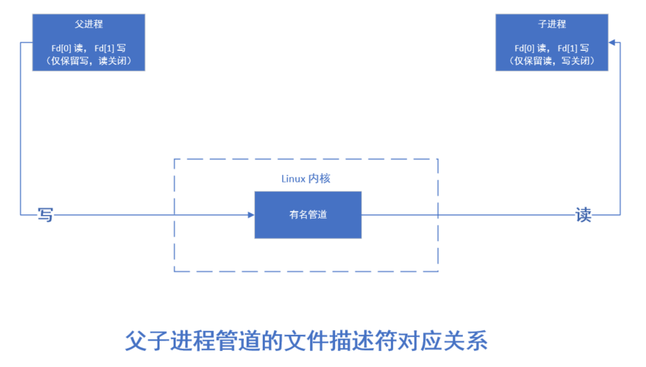
)此时的关系看似非常复杂，实际上却已经给不同进程之间的读写创造了很好的条件。父子进程分别拥有自己的读写通道，为了实现父子进程之间的读写，只需把无关的读端或写端的文件描述符关闭即可。将父进程的写端 fd[1] 和子进程的读端 fd[0] 关闭，则父子进程之间就建立起一条“子进程写入父进程读取”的通道。
同样，也可以将父进程的读端 fd[0] 和子进程的写端 fd[1] 关闭，则父子进程之间就建立起一条“父进程写入子进程读取”的通道。
另外，父进程还可以创建多个子进程，各个子进程都继承了相应的 fd[0] 和 fd[1] ，此时，只需要关闭相应的端口就可以建立各子进程之间的的通道。
- 管道读写注意点
- 只有在管道的读端存在时，向管道写入数据才有意义。否则，向管道写入数据的进程将收到内核传来的 SIGPIPE 信号(通常为 Broken pipe 错误)。
- 向管道写入数据时，Linux 将不保证写入的原子性，管道缓冲区一有空闲区域，写进程就会试图向管道写入数据。如果读进程不读取管道缓冲区中的数据，那么写进程将会一直阻塞。
- 父子进程在运行时，它们的先后次序并不能保证。因此，为了保证父子进程已经关闭了相应的文件描述符，可在两个进程中调用 sleep()函数。当然，最好还是采用进程之间的同步与互斥机制。
管道通信实验
下面，我们通过一个小的实例代码来学习进程如何通过管道来通信的。在 VS code 窗口中创建新的文件 pipe.c ，然后添加如下代码内容：
#include <unistd.h>
#include <sys/types.h>
#include <errno.h>
#include <stdio.h>
#include <stdlib.h>
#include <string.h>
#include <sys/wait.h>
#define MAX_DATA_LEN 128
#define DELAY_TIME 3
int main()
{
pid_t pid;
int pipe_fd[2];
char buf[MAX_DATA_LEN];
const char data[] = "Pipe Demo Program";
int real_read;
int real_write;
memset((void *)buf, 0, sizeof(buf));
if(pipe(pipe_fd) < 0)
{
printf("pepe create error\n");
exit(1);
}
pid = fork();
if(pid == 0)
{
//子进程，关闭写描述符，通过sleep(3)等待父进程关闭相应的读描述符
close(pipe_fd[1]);
sleep(DELAY_TIME);
//子进程读取管道内容
real_read = read(pipe_fd[0], buf, MAX_DATA_LEN);
if(real_read > 0)
{
printf("Child progress : read %d bytes from the pipe : '%s' \n", real_read, buf);
}
close(pipe_fd[0]);
exit(0);
}
else if(pid > 0)
{
//父进程，关闭读描述符，并通过睡眠3秒等待子进程关闭对应的写描述符
close(pipe_fd[0]);
sleep(DELAY_TIME);
//写管道内容
real_write = write(pipe_fd[1], data, strlen(data));
if(real_write != -1)
{
printf("Parent progress : write %d bytes to the pipe : '%s' \n", real_write, data);
}
close(pipe_fd[1]);
waitpid(pid, NULL, 0); //等待子进程结束
}
return 0;
}添加完成后，如下图：
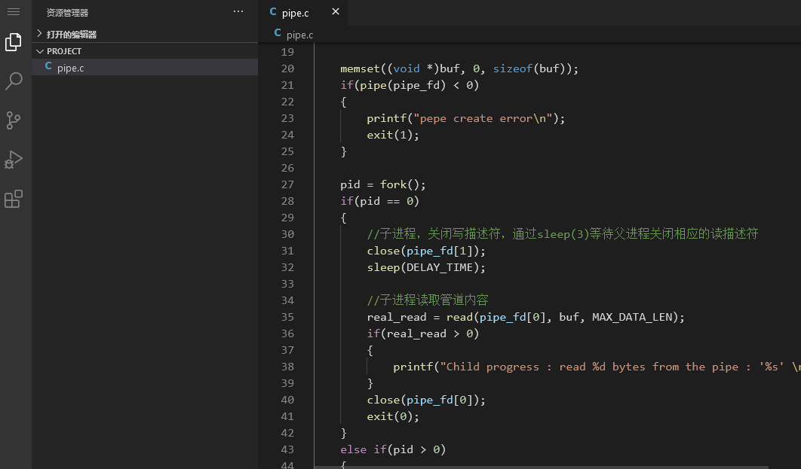
)在 VS Code 平台下的终端窗口中输入以下命令进行编译和运行，观察程序最终结果：
gcc pipe.c -o pipe
./pipe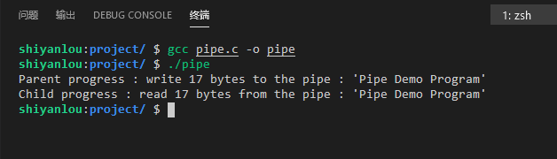
)有名管道及其系统调用
有名管道是对无名管道的一种改进，它具有以下特点：
- 它可以使互不相关的两个进程间实现彼此通信；
- 该管道可以通过路径名来指出，并且在文件系统中是可见的。在建立了管道之后，两个进程就可以把它当做普通文件一样进行读写操作，使用非常方便；
FIFO严格地遵循先进先出规则，对管道及FIFO的读总是从开始处返回数据，对它们的写则是把数据添加到末尾，它们不支持如lseek()等文件定位操作。
有名管道的创建可以使用函数 mkfifo()，该函数类似与文件中的 open() 操作，可以指定管道的路径和打开的模式。同时还可以在终端窗口使用命令来创建有名管道。
mknod [管道名] p在管道创建成功后，就可以使用 open()、write() 和 read() 这些函数了。与普通文件的开发设置一样，对于为读而打开的管道可在 open() 中设置 O_RDONLY，对于为写而打开的管道可在 open() 中设置 O_WRONLY，在这里与普通文件不同的是阻塞问题。由于普通文件在读写时不会出现阻塞问题，而在管道的读写中却有阻塞的可能，这里的非阻塞标志可以在 open() 函数中设定为 O_NONBLOCK。
下面分别对阻塞打开和非阻塞打开的读写进行说明：
- 对于读进程：
- 若该管道是阻塞打开，且当前
FIFO内没有数据，则对读进程而言将一直阻塞到有数据写入。 - 若该管道是非阻塞打开，则不论
FIFO内是否有数据，读进程都会立即执行读操作。即如果FIFO内没有数据，则读函数将立刻返回 0。
- 对于写进程
- 若该管道是阻塞打开，则写操作将一直阻塞到数据可以被写入。
- 若该管道是非阻塞打开而不能写入全部数据，则读操作进行部分写入或者调用失败。
对于 mkfifo() 函数介绍如下：
#include <sys/types.h>
#include <sys/state.h>
//函数原型
int mkfifo(const char *filename, mode_t mode)
/*
参数：
- filename: 要创建的管道，包含路径
- mode: O_RDONLY:读管道
O_WRONLY:写管道
O_RDWR:读写管道
O_NONBLOCK:非阻塞
O_CREAT:如果该文件不存在，那么就创建一个新的文件，并用第三个参数为其设置权限
O_EXECL：如果使用O_CREAT时文件存在，那么可返回错误消息。这个参数可测试文件是否存在
返回值：成功返回 0 ，失败返回 -1
*/有名管道实验
对于有管道的使用]就不需要像无名管道那样使用 fork() 创建子进程来进行通信，有名管道是可以在没有亲属关系的进程之间进行通信的。所以在这个实验中，我们将要编写两个程序，通过执行这两个进程在工作过程中使用 fifo 通信来进行实验。这两个程序一个负责向管道种写数据，一个负责读数据。写数据的程序为 fifo_write.c ，读数据的代码文件为 fifo_read.c，具体如下：
在 VS Code 平台下创建 fifo_write.c 文件，如下图：
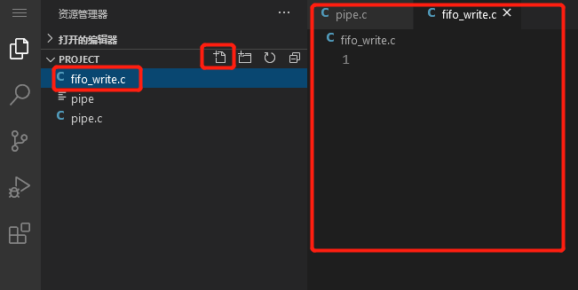
)添加以下内容如下：
#include <sys/types.h>
#include <sys/stat.h>
#include <errno.h>
#include <fcntl.h>
#include <stdlib.h>
#include <stdio.h>
#include <limits.h>
#include <string.h>
#include <unistd.h>
#define FIFO_NAME "/tmp/demo_fifo" /* 有名管道名称 */
#define MAX_BUFFER_SIZE PIPE_BUF /* 定义数据长度，使用 limits.h 中的 PIPE_BUF 长度 */
int main(int argc, char *argv[])
{
int fd;
char buff[MAX_BUFFER_SIZE];
int nwrite;
fd = open(FIFO_NAME, O_WRONLY);
if(fd == -1)
{
printf("Open fifo file error\n");
exit(1);
}
while(1)
{
//从键盘获取输入的字符，将数据存入 buff
memset(buff, 0, MAX_BUFFER_SIZE);
printf("请输入需要向 FIFO 中发送的数据：(q/Q 退出)\n");
scanf("%s", buff);
/* 判断退出条件 */
if(!strcmp(buff, "q") || !strcmp(buff, "Q"))
{
printf("[%d] write fifo 程序退出....", getpid());
break;
}
nwrite = write(fd, buff, strlen(buff)+1);
if(nwrite > 0)
{
printf("Write '%s' to FIFO\n", buff);
}
else{
printf("Write FIFO error...\n");
break;
}
}
close(fd);
return 0;
}在 VS Code 平台下创建 fifo_read.c 文件，如图：
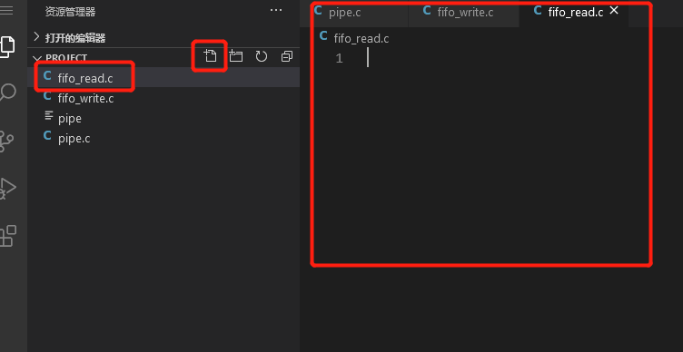
)添加内容如下：
#include <sys/types.h>
#include <sys/stat.h>
#include <errno.h>
#include <fcntl.h>
#include <stdlib.h>
#include <stdio.h>
#include <limits.h>
#include <string.h>
#include <unistd.h>
#define FIFO_NAME "/tmp/demo_fifo" /* 有名管道名称 */
#define MAX_BUFFER_SIZE PIPE_BUF /* 定义数据长度，使用 limits.h 中的 PIPE_BUF 长度 */
int main(int argc, char *argv[])
{
int fd;
char buff[MAX_BUFFER_SIZE];
int nread;
/* 判断 FIFO 文件是否存在，如果不存在则创建 */
if(access(FIFO_NAME, F_OK) == -1)
{
if((mkfifo(FIFO_NAME, 0666) < 0) && (errno != EEXIST))
{
printf("Cannot create fifo file\n");
exit(1);
}
}
fd = open(FIFO_NAME, O_RDONLY);
if(fd == -1)
{
printf("Open fifo file error\n");
exit(1);
}
while(1)
{
//从键盘获取输入的字符，将数据存入 buff
memset(buff, 0, MAX_BUFFER_SIZE);
nread = read(fd, buff, MAX_BUFFER_SIZE);
if(!strcmp(buff, "q") || !strcmp(buff, "Q"))
{
printf("[%d] read fifo 程序退出....", getpid());
break;
}
if(nread > 0)
{
printf("Read '%s' from FIFO\n", buff);
}
else{
printf("Read FIFO error...\n");
break;
}
}
close(fd);
return 0;
}编写完代码后，在终端通过 gcc 进行编译，在执行的时候分为两个终端窗口来执行，首先执行管道读程序 fifo_read，然后在另一个窗口中启动管道写进程 fifo_write，具体结果如下：
gcc fifo_read.c -o fifo_read
gcc fifo_write.c -o fifo_write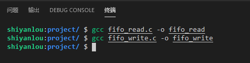
)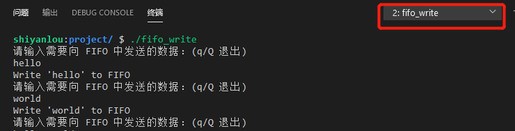
)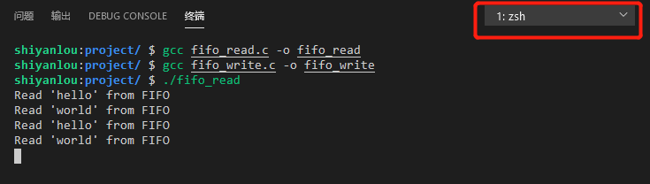
)